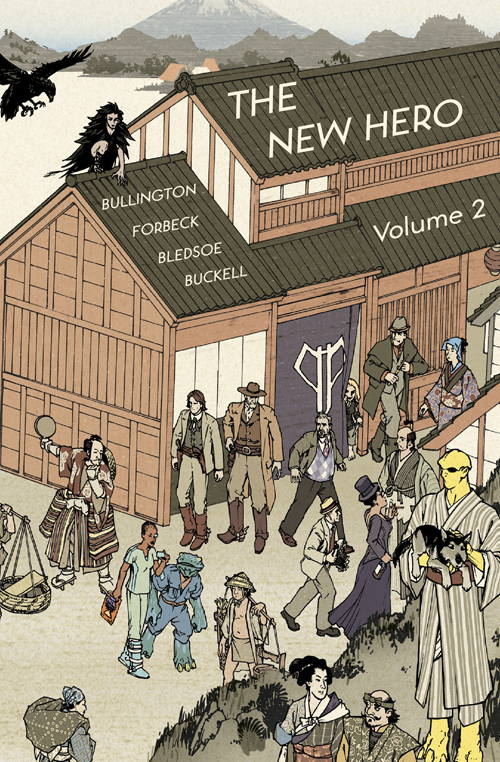

It's official: After 13 years, I'm leaving Paizo to focus on writing full-time. I'm thrilled that I got to guide Starfinder through the most successful game launch in Paizo's history, and I'm still deeply in love with (and hope to keep writing in) the worlds of Pathfinder and Starfinder, but the time has finally come for me to devote 100% of my attention to writing, rather than managing a division of a company. I have tremendous confidence in my colleagues at Paizo, and while it's hard to step away from my portion of the controls, I can't wait to see where they take things!
You can find my full farewell blog over on paizo.com. Thank you to everyone who's supported me on this crazy adventure, and I hope you'll come with me into whatever's next!
In case you were wondering what I've been up to for the last year, this has been pretty much all of it. Getting the Starfinder RPG off the ground has been the biggest challenge and triumph of my tabletop career, and I couldn't have done it without an amazing and dedicated team. The book hits at Gen Con this August, but of course there's still plenty to be done between now and then. A core rulebook is, after all, just the beginning...

It's official: Paizo is doing a new science fantasy roleplaying game called Starfinder, and I'm the creative director! Click here to read the announcement.
Many thanks to all the folks at Paizocon and online who've gone out of their way to track me down and express excitement about the game. It's intensely gratifying to be working on a project so many people care about, and I can't wait to show you all what we've come up with at Gen Con 2017.

I'm super excited to announce that the audiobook for my Pathfinder novel Death's Heretic--the story of an atheist inquisitor forced to work for the goddess of death--is currently available for FREE on Audible.com! There are absolutely no strings attached--just go to audible.com/deathsheretic and snag a copy! The narration is wonderful, and the promotion only lasts until February 16th, so please grab it while you have the chance, review it when you're done, and spread the word!
Alright, I admit it: I'm terrible at updating this website regularly. My Twitter has completely satiated any blogging tendencies, making this website primarily an online portfolio. But hey, if you like that sort of thing, feel free to poke around and check out all the new interviews, covers, links, etc. And if not, allow me to make amends with this video of me dancing in the sangeet of a friend's wedding.
If it seems like I only ever update my website from the strange half-real dimension that is convention travel, that's because it's true. I'm currently running on three hours of jet-lagged sleep as I prepare for the glorious madness that is Gen Con, but there's so much to tell that I can't put it off any longer.
First things first: The Redemption Engine won the Scribe Award for Best Original Novel! The Scribes are awarded by the International Association of Media Tie-In Writers at San Diego Comicon for the best books and other written work tied into existing properties, and my novel was up against books based on such properties as Star Trek, Grimm, Sleepy Hollow, and more. I ended up tying for first with Christa Faust's Sins of the Father, tied into the show Fringe. It's a huge honor, and I'm deeply thankful for both the judges' decision and all the kind wishes from other authors.
In other news, I did probably the longest interview of my life, corresponding over the course of a month with Aidan Moher over at the Hugo Award-winning A Dribble of Ink blog, and you can delve deep into the metaphysics behind writing and editing games and tie-in with us here.
If that's not enough, I also wrote an essay for Tor about what roleplaying games can teach writers, and Vex Mosaic was kind enough to reprint my old essay "What Authors Owe Fans," in which I discuss the social contracts implicit in writing a series.
Last but not least, it's Gen Con time! Check out my schedule below—if you can't make it to any of the panels below, stop by the big purple Paizo booth and say hello, and definitely don't miss the celebrity author game on Thursday night!
- Thursday, 1:00pm-2:00pm — Editing Your Work (Writer's Symposium, Room 245): With Susan J. Morris, Erin M. Evans, Howard Andrew Jones, and Matt Forbeck.
- Thursday, 4:00pm-5:00pm — Recovering from Controversy (Writer's Symposium, Room 245): With Chuck Wendig, Jaym Gates, Jim Minz, and Kerrie L. Hughes.
- Thursday, 5:00pm-7:00pm — Live Audience-Participation Pathfinder Game (Paizo Seminar Room, Room 233): Come watch me run celebrity authors Max Gladstone, Elizabeth Bear, Wesley Chu, and Scott Lynch through a madcap goblin game of Pathfinder, in which randomly chosen audience members will get to throw in plot twists and change the story! See here for details. Drop by for a minute or an hour—it's totally free!
- Friday, 12:00pm-1:00pm — Pathfinder Tales Signing (Paizo Booth): Come get your books signed by me and Pathfinder Tales authors Chris Jackson, Howard Andrew Jones, Richard Lee Byers, Mike Stackpole, Gary Kloster, and Josh Vogt.
- Saturday, 1:00pm-2:00pm — Gaming the Novel: How Gaming Informs Worldbuilding (Writer's Symposium, Room 243): With Marco Palmieri, Tracy Hickman, Elizabeth Bear, Wesley Chu, and Max Gladstone.
- Saturday, 4:00pm-5:00pm — Creating Religions (Writer's Symposium, Room 244): With Peter Orullian, Kelly Swails, Michael R. Underwood, and Stan!
- Sunday, 10:00am-11:00am — Secrets of Golarion (Paizo Seminar Room, Room 233): With F. Wesley Schneider, James Jacobs, and other Paizo staff.
- Sunday, 11:00am-12:00pm — Writing and Editing (Paizo Seminar Room, Room 233): With Judy Bauer.

I'm writing this from the limbo between cons (which, if you're curious, looks suspiciously like the Seattle airport). Yesterday saw the end of an amazing Paizocon (now four days long!), and the rest of this week will be Book Expo America in NYC. Some quick highlights of the last few months:
- The Redemption Engine has been nominated for a Scribe Award for Best Original Speculative Novel! The Scribe Awards recognize the best tie-in work of the year, and it's an honor to be nominated alongside so many great writers and properties. You can check out the full list of nominees here.
- Pathfinder Origins #4, in which I explore the gruesome nation of Nidal alongside Merisiel and Sajan, is on shelves now! Also, take a look at that awesome cover by issue artist Leandro Oliveira—Leandro's a master, and I can safely say that this issue contains the single most beautiful page of all Pathfinder comics to date.
- I did a live Ask Me Anything session on Reddit which was far and away my biggest one ever—thanks to everyone who asked questions!
- I had a great conversation about the influences of gaming on speculative fiction with Shanna Germain, Michael Underwood, and Andrea Phillips over at the Roundtable Podcast.
Time to board. See you all on the other side!

No time for posts, Dr. Jones! And yet I'd be remiss if I didn't mention a few recent developments:
- Check out the totally bitchin' Stjepan Sejic cover for Pathfinder Origins #2, written by yours truly and out in March!
- I wrote an essay for Lightspeed's QUEERS DESTROY SCIENCE FICTION PROJECT, titled "Halfway in the Pool," all about why it's okay to be just a little queer.
- Judging by the way my Twitter and email exploded when those two things hit in the same week, it seems like they both touched a nerve with folks (in a good way).
- I was lucky enough to get great reviews of my gay Lovecraftian romance story "The God Beneath the Mountain" from both Fanboy Comics and The Horror Fiction Review, both of which called the story out as one of their favorites! Click the links to read the reviews.

Happy holidays, everybody! I've been running a thousand miles an hour trying to make headway on a new YA novel among all the other stuff projects, but here are some neat things that popped up on the internet recently:
- There's a new cover for Madness on the Orient Express, the collection from Chaosium featuring my gay Lovecraftian period romance (how's that for a kettle of buzzwords?), "The God Beneath the Mountain."
- I went on the Writers' Roundtable Podcast to talk about deadline creativity, the joy of the unexplained, the terrible glory of the outline, the difference between an artist and an artisan, and more!
- SF Signal gave The Redemption Engine 4 out of 5 stars, and called Salim an "intriguing and exciting character."
- My story "Suits" got called out in Books, Bones, and Buffy's review of War Stories as "touching and emotional."
- Author Kelly Jensen called out my story "Bonded Men" in her positive review of Shattered Shields on SFCrowsnest, saying "This story set such an unusual twist on traditional military fantasy. Needless to say, I loved it. The battle scenes were exciting and the emotion was finely wrought. The questions of love and honour beautifully answered. I would love to read more stories set in this universe."
What more could a guy ask for for Christmas? Thanks, everyone!
It's been a busy month! Thanks a ton to everyone who came out to the first Brides of the Lizard God show--it was a packed house, and I look forward to uploading videos and pictures soon. I also had a fabulous time at the World Fantasy Convention, where I continued my tradition of having amazing conversations and being told I look like other, more famous publishing people. (Lest one think I'm exaggerating, Gordon Van Gelder actually brought his family by to see the notorious Guy Who Looks Like Younger Him. The children were unconvinced.) So what else is new?
- The Skiffy and Fanty crew had me on for a lively discussion of Snowpiercer.
- Roqoo Depot was kind enough to post a glowing review of The Redemption Engine.
- ...and so was Epic Roll.
- There's also an excellent review of War Stories, a military SF anthology containing my story "Suits," over at A Fantastical Librarian.
Good luck to everyone doing NaNoWriMo! Remember: it doesn't matter if the book's good unless it's first finished!
In Seattle? Come see my band's big debut show this Friday, October 17th! It's a pay-what-you-want occasion, so come down, hang out, and check out the ridiculous metal action, plus an awesome folk-punk warm-up from our friends The Mongrel Jews!
Friday, October 17th
Doors at 7:00/Show at 7:30 sharp
Rendezvous/Jewelbox Theater (2322 2nd Avenue, Seattle)
Brides of the Lizard God
The Mongrel Jews
21+
Pay What you Want
Go to the Brides of the Lizard God section to check out our first album, A Different Kind of Terror, for free! Hope to see you there!
The end of summer has been exceptionally busy, but a great big thank-you to everybody at Gen Con who stopped by to say hello and get books signed, as well as to all the awesome Pathfinder cosplayers who blew our minds repeatedly throughout the show. You all make Gen Con something we look forward to every year.
As you know if you follow me on Twitter (@jameslsutter), I've been doing a ton of interviews and online appearances recently:
- Over at SF Signal, I've got a new guest essay, "What Authors Owe Fans," which responds to Neil Gaiman's now-infamous blog post about how "George Martin is not your bitch." In it, I try to explore the social contract that exists between readers and authors of epic series.
- On the Speculate podcast, I joined author Mark Smylie and the hosts for a roundtable discussion of the business side of speculative fiction publishing.
- Hobart, the first journal to ever publish my fiction back when I was 19, just ran an interview about writing with me.
- SF Signal was kind enough to bring me on their podcast as well. My cup runneth over.
In addition to all that, my gay Lovecraftian period horror-romance, "The God Beneath the Mountain," just came out in Madness on the Orient Express from Chaosium, alongside stories from a bunch of awesome authors, and you can pick it up by clicking the link! It's all about building the Simplon railroad tunnel, and most of the horror is bases on real-world events...
Thanks again to everyone for a wonderful summer!
Gen Con is almost upon us! If you'll be at the show, you can find me either at the following panels and seminars, or at the giant purple Paizo booth--if you can't find me at one, I'm probably at the other, and I'd love to chat and sign books! In addition, this year I'm going to be part of the pre-show entertainment at the ENnies award ceremony, playing bass for Rockonomicon, a glam rock filk band formed entirely of previous ENnies gold winners and the brainchild of madman Rone Barton. Should be a one-of-a-kind experience...
GEN CON SEMINARS
- Thursday, 11am: Pathfinder 101 (Room 231)
- Thursday, 5pm: Writer's Craft: Creating Story Arcs (Room 243)
- Friday, 11am: Media Tie-In: Game to Story (Room 245)
- Friday, 1pm: Media Tie-In: RPG Fiction Market (Room 245)
- Friday, 2pm: Diversity in Gaming (Room 231)
- Saturday, 1pm: Writer's Life: Tales from the Trenches (Room 245)
- Sunday, 10am: Secrets of Golarion (Room 231)
- Sunday, 3pm: Pathfinder Tales Q&A (Room 231)
In other news, I recently got back from the Launchpad Astronomy Workshop in Wyoming, which is an intense week-long crash course in astronomy specifically for professional authors looking to put more real science in their science fiction. The course was definitely drinking from the firehose of knowledge--I took a year of astronomy in college, and we covered all of that stuff in the first two days! It was also absolutely wonderful, and in addition to learning a ton of science and getting to use an enormous telescope at a working observatory, I also made a bunch of great friends. (Pictured below: me and the YA Launchie crew--Lisa Yee, Jenn Reese, and Malinda Lo.) Spending a week in residence at the University of Wyoming was like going to back to college, except this time everyone there with me was a fascinating and successful pro author. How cool is that?!
In any case, Launchpad was an incredible experience, and I'm deeply grateful to our instructors Mike Brotherton, Christian Ready, and Andria Schwortz. If you're a writer looking to start making a higher caliber of mistake in your science fiction, I can't recommend the program enough!
Looking for some nonfiction about the writing industry? Well, look no farther--I've got two new essays up online!
The first, "To Retweet or Not to Retweet: On Rebroadcasting Praise," is all about trying to walk the line between responsible self-promoter and spammer, and how retweeting others' comments can help you get the word out. It's an issue I've wrestled with a lot, so I was glad the Inkpunks were kind enough to give my thoughts a home.
The second marks my debut in the pages of Clarkesworld! "Reclaiming the Tie-in Novel" is all about exploring the weird prejudice our industry has against fiction based on games or film--something I'm naturally quite interested in.
On a different note, I've been lucky enough to be selected as one of the authors for the Launchpad Workshop--a week-long crash-course in astrophysics intended to keep science fiction writers from making the same ol' elementary mistakes--so I'm about to have my fantasy-writing brain squished out my ears by a load of awesome new scientific facts. But before I go, I want to say thanks again to everyone who came up to me at Paizocon to say hello! There's truly nothing more invigorating than seeing hundreds of people playing a game you worked on (or reading your book!), and I came straight home from the show and started writing. You guys are my inspiration.
See you all on the flip side!
You might think that, having just released a new novel, I'd be out of releases to celebrate for a bit. But you'd be WRONG!
It's my great pleasure to announce the release of A Different Kind of Terror, the debut EP from my new band, Brides of the Lizard God! We're a self-aware arena rock band that writes everything from hair metal to punk to indie, frequently writing about dragons and starships. Our only rule is that nothing is too cheesy, so long as it is also awesome. And after months of engineering and mixing, the entire thing is now online for free for you to listen to or download! Click here to check it out!
In other musical news, I must admit that I swooned a bit when I discovered that John Darnielle (frontman for The Mountain Goats) picked up a copy of The Redemption Engine at Book Expo America.
Last but not least, award-winning game publishers Kobold Press posted a lovely review of The Redemption Engine, saying:
"Wow, just wow... high concepts and well-written, descriptive action sequences made this one of the best fantasy books I’ve read in a long time."
Next week I'm off to the mountains of Canada for a long-awaited road trip, but presuming I don't get eaten by bears, once I return I'll be starting in earnest on a new game book I've been wanting to write for a very long time...
Things have been immensely busy the last few weeks. Thank you to everyone who's bought the new book, and an extra-special thanks to those folks who've posted reviews. Those little Goodreads/Amazon/B&N stars often mean much more than you might think, especially early in a book's life cycle, so if you've been considering taking two minutes to post a book review anywhere (whether for one of my books or someone else's), please do so! It helps a lot in convincing new readers to take a chance on an unfamiliar author.
I'll be at BEA this week if you want to stop by the Paizo table in the Diamond Comics booth, but in the meantime, here's what's been going on in Ye Olde Blogge Tour:
- The final chapters of "Boar and Rabbit," my web fiction serial starring Bors and Roshad from The Redemption Engine, is now live in its entirety, and you can read it all for free here! (Just click "show post" for each chapter.) Each chapter comes with an awesome character illustration by Eric Belisle, such as the one of Bors to the right. I've been describing this story as "Aladdin if both he and Jasmine were gay men," and I'm hoping it lives up to the comparison!
- Tor.com ran what may be the best interview I've ever done, in which I discuss which Star Trek cast members have seen me naked, the benefits of living with a mad scientist, and marrying a lungfish. I hope it amuses you as much as it did me.
- Over at Skiffy and Fanty, I had a chance to discuss my superpower: talking to people about the things that are important. (Well, that and sneezeomancy.)
- On Dave Gross's blog, I talk about the undeniable importance of contractions and my formative experience with the supernatural.
- Kristine Chester at Fanboy Comics had some choice words to say about The Redemption Engine: "James L. Sutter knows his stuff... There is such rich characterization here that even characters that I was shaky on upon first meeting, I learned to love... I can't remember ever feeling that way about reading an RPG fantasy novel. Best of all are the one-on-one interactions between Salim and the rest of the cast. Salim is a complex man whose strict beliefs and the way he philosophizes, argues, discusses, and learns from others kept me reading chapter after chapter... Sutter writes excellent action scenes even when the scope of an event seems like it would be impossible to write about. Sutter's descriptions of magical effects had me squirming, and his fight scenes left me tense." (Read the whole review here.)
Now off to pack for New York. See you all on the flip side!
Last night's book launch at the University of Washington Bookstore was an absolute dream--a packed house, great questions, and a ton of autographs. In addition to books, I signed a moustache-finger, biceps, some lovely buttocks, and a truly majestic beard. I couldn't have asked for a better way to celebrate my bookday, so thank you so much to everyone.
So what else is going on?
- Tor.com ran an illustrated sample chapter from The Redemption Engine.
- Fantasy Book Critic reviewed The Redemption Engine, saying: "I have rarely read a book with each setting so completely fleshed out: thoroughly gorgeous descriptions and thoroughly problematized conflicts. This story examines its characters' and worlds' assumptions at every turn. If you are feeling starved for high fantasy with diverse characters, definitely check this out... Kaer Maga is many things, but homogenous and predictable are not among them... If you love exploring detailed settings with diverse characters, philosophical quandaries, and sorcerous battles, check out The Redemption Engine."
- There's a new chapter of my free web fiction serial, "Boar and Rabbit," over at Paizo.com! In this chapter, we learn never-before-revealed details about the Horse Throne of central Casmaron, and the identity of that no-nonsense dude pictured on the right...
- I did a new AMA with Reddit Fantasy that you can read here.
- Black Gate ran an in-depth author spotlight on me, in which I quote McBain and reveal the role The Babysitters' Club had on my writing.
- The Grassy Gnoll ran perhaps the most thorough review I've ever received, closing with: "Read it. Right now. Then tell me how awesome it is. Go on, I’ll wait. In fact I might just reread it right now..."
- The SFFWRTCHT Twitter interview I did a few weeks ago now has a transcript online.
So yeah, it's been a pretty good week...
The book is out! If you're in Seattle this Friday, come on out to the signing/launch party at the University of Washington Bookstore! In the meantime, check out these fine new interviews, stories, and essays:
- The Functional Nerds podcast brought me on to discuss guitars, high school, twitter politics, moral ambiguity—oh yeah, and writing fantasy as well.
- Chuck Wendig was kind enough to let me borrow his soapbox at Terrible Minds to reveal the most important lesson I've learned about writing.
- The Qwillery (which interviewed me about Death's Heretic a few years back) did a follow-up Q&A about The Redemption Engine.
- The first installment of "Boar and Rabbit," my brand new 4-part serial short story starring characters from The Redemption Engine (including Roshad, pictured here) is now live on Paizo.com, and you can read it for free! Have you always secretly wished that Aladdin and Princess Jasmine were both gay dudes? THEN HAVE I GOT A STORY FOR YOU!
Thanks so much to everyone who's been helping me get the word out!
IT'S ALMOST HERE! The Redemption Engine hits shelves THIS WEEK, and folks in the vanguard are already starting to see copies trickling in. Yet while I wait in rapturous hyperventilation for this thing to finally be out in the world, there are already some nice reviews, interviews, and other fun things filling the interwebs!
- io9's own Ed "the Grabster" Grabianowski did an extensive interview with me about the new book that you can check out here.
- Black Gate has a lovely review, courtesy of Andrew Zimmerman Jones.
- I Blame the Dice has a glowing review, a massive interview (in which I discuss such things as how I got my current job, and why I find writing gay romance easier than straight romance), and a giveaway wherein you can win a signed copy of the book, all courtesy of Levi Miles.
- The Paizo Blog has a free sample chapter of the novel, featuring this awesome all-new art of Maedora by Eric Belisle!
And that's just the tip of the iceberg! Keep your eyes peeled in the next few weeks for even more interviews and announcements. And if you're in Seattle, don't forget to come by the official book release party on May 9th at the University of Washington Bookstore and help me celebrate!
It's less than two weeks until the release of The Redemption Engine, which means it's time to announce...
THE BOOK RELEASE PARTY!
Are you going to be in Seattle on Friday, May 9th? If so (or even if not), you're hereby invited to the signing/launch party for The Redemption Engine!. As with Death's Heretic, it'll be hosted at the University of Washington Bookstore in the U District (4326 University Way), and will start promptly at 7:00pm with a short reading, followed by a Q&A session and signing. The bookstore will have copies on hand, but you're also welcome to bring those bought elsewhere, or any other books you want signed. It'll be a fun, casual affair, so come hang out and help me celebrate!
In other news...
- Buzzfeed picked The Redemption Engine as one of the speculative fiction books coming out in April that you need to read!
- The Secular Coalition of America featured me as its Secular Artist of the Month for my work on atheism in fantasy!
- The Paizo Blog has a big ol' interview with me, in case you haven't gotten tired of such things yet! (Warning: there are a lot more interviews to come in the weeks ahead...)

The release of The Redemption Engine is just around the corner, but in the meantime, plenty of other things have been happening!
- I was a guest geek on the most recent Geek's Guide to the Galaxy podcast over at Wired! Pathfinder Tales author Wendy N. Wagner and I talk with David the host about RPG novels past and present, from Forgotten Realms to Pathfinder, as well as how such things are made. Check it out here!
- There's a Todd Lockwood cover for the forthcoming Shattered Shields military fantasy anthology from Baen, featuring a ton of great authors and yours truly!
- The Crossing the Streams contest is now closed! Congratulations to winners Graham and Josh, the latter of whom won the internet humor challenge with the image below. Both winners will receive a free copy of Death's Heretic!
Do you like free books? If so, you're in luck--this year I'm taking part in Crossing the Streams 2014, a massive multi-author contest featuring a ton of cool fantasy and science fiction authors. Entering is extremely easy, so scroll down and check it out!
How it Works
Each individual author involved is running a contest on his or her own site. The specific details vary from author to author, yet each of us will select two winners from the contest on our own site. Each of those winners will receive one signed book--in my case, a copy of Death's Heretic--free, from the author whose contest they won. You'll also notice that I've got links to all the other authors involved below--you can only enter each author's contest once, but you can enter (and potentially win) as many of the individual contests as you like. We're like Pokemon--how could you not collect us all?
Yet that's not the big prize. Once the contests have ended, all the authors involved will get together and choose one single “super-winner” from all the entries on all our sites combined. This one lucky individual will receive a free signed book from each and every one of the authors involved. That's around twenty free books!
So what do you have to do to start winning all these rad prizes?
How to Enter My Contest
For me, it's simple: send me an email at james.sutter@paizo.com and make the subject line “Crossing the Streams Entry.” I even made you a little clickable "mailto" link so you don't have to go through the hassle of opening your email program. Such decadence!
That's all you have to do... but if you want to increase your chances of winning, include a link to a funny internet picture, gif, comic, or meme in the body of the email. Of the two winners I choose, one will be chosen completely at random, but the other will be chosen by whichever silly internet humor amuses me the most. And of course everyone who enters is also in the running for the random “super-winner” selection.
Entries must be received between today and March 19th, 2014, and the winners get signed copies of Death's Heretic! It's so easy, how could you not enter?
So Who Else You Got?
Below you'll find a list of all the other authors who are participating in the contest, along with links to their contest pages. But of course, the not-so-secret point of this contest is to introduce readers to new authors, so in addition to entering their contests, consider poking around their sites a bit. They might (like me) have links to free short stories and things, allowing you to discover the real grand prize--a new favorite author!
- Betsy Dornbusch
- Darrin Drader
- Dave Gross
- Erik Scott de Bie
- Erin M. Evans
- Erin N. Hoffman
- Gabrielle Faust
- Howard Andrew Jones
- Ari Marmell
- Jeff Salyards
- Joshua Palmatier
- Marsheila (Marcy) Rockwell and Jeffrey J. Mariotte
- Matt Forbeck
- Paul Kemp
- Richard Lee Byers
- Saranna DeWylde
- Scott Lynch
- Wendy N. Wagner
It's here! While there have been mock-up covers floating around Amazon and other corners of the internet, at long last The Redemption Engine has been shipped to the printer, which means that I can officially unveil the final cover! Longtime Pathfinder artist Craig J Spearing did this one, and I love how hardcore both Salim and the angel look. I hope you find the story itself metal enough to warrant such an image.
Yet that's not my only new picture to show off! As of this weekend, I now have my first-ever professional author photos! If you're in the Seattle area and in need of portraits or wedding photography, I highly recommend Elise Koncsek--since I'm someone who has a notoriously hard time smiling naturally for the camera (the dude who took my senior pictures in high school told me I was the hardest subject he'd ever photographed in his career), the fact that these came out looking so badass is a testament to her skill (and that of her intrepid assistants Jrd, Michelle, and Zefram).
Also, Seattltes should be sure to reserve May 9th on their calendars! I'll be doing a reading/signing/launch party for The Redemption Engine at the University Bookstore at 7:00pm, and if the Death's Heretic book release party was any indication, it should be a good time for all. Hope to see you there!
Tangent Online has just released its 2013 Recommended Reading List, and my story "BEHEADED BY PEASANTS"--inspired by my work with the Machine of Death project--received the highest possible rating of three out of three stars! In case you missed it, you can read the story for free over at Beneath Ceaseless Skies.
Happy New Year, everybody! The last few months have been madness, between the holidays, moving into a new house, and recording with my new band Brides of the Lizard God, but there are a few things of note:
- I'm going to be part of Shattered Shields, a new anthology of military fantasy from Baen that's just been announced! My story, "Bonded Men," is about an elite all-gay commando unit inspired heavily by the historical Sacred Band of Thebes. The anthology is edited by Jennifer Brozek and Bryan Thomas Schmidt, and has a total powerhouse author lineup including David Farland, Larry Correia, Glen Cook, Elizabeth Moon, and more--you can check out the full TOC here.
- Io9 reviewed Distant Worlds, my guide to the Pathfinder Campaign Setting's solar system, and had a ton of nice things to say about it! Read the full article here.
- Some media reviews have popped up for "Magic Pig," the short I did for the Pathfinder Goblins! comic series, and it sounds like people enjoyed it! You can see what they had to say at Adventures in Poor Taste and First Comics News.
As always, though this news page may move slow, you can always find me hanging out over on Twitter at @jameslsutter. Expect to see a whole lot more news and announcements as we lead up to the release of The Redemption Engine in April, but for now, I hope your 2014 is a great one!
The Publishers Weekly webcast on The Future of Epic Fantasy is now live--click the image to go listen and watch it yourself for free any time between now and January. Thanks so much to Rose Fox for being an awesome interviewer, and to my co-panelist Marco Palmieri for representing Tor--the two of them were tremendously fun to chat with, and it was an honor to share a virtual stage with them. Thanks as well to everyone at PW who made the event happen. In addition to talking about epic fantasy and where it's going, we ended up having an even more important discussion about diversity in fantasy, and I also appreciate all the listeners who chimed in on the Twitter feed or in the Q&A. As always, I'm happy to continue the discussion via Twitter, so if you take a listen and have comments, feel free to hit me up!
Listen to the whole thing here.
Two quick things of note!
- This Wednesday at 1:00pm EDT (that's 10:00am for my fellow West Coasters), I'm going to be doing a webcast interview for Publishers Weekly on the future of epic fantasy! The illustrious Rose Fox will be interviewing both me and Marco Palmieri from Tor, and will also be taking audience questions. Even if you can't listen to the live show, you'll be able to check it out after the fact. Get all the details here and come join us!
- I'm going to be part of the new War Stories military science fiction anthology from Apex Publications, alongside such awesome authors as Joe Haldeman, Ken Liu, and T. C. McCarthy. I'm honored to be in such great company, and it's destined to be one hell of a book, so if you want to get in on the ground floor, they're running a Kickstarter right now where you can pre-order the book, among other goodies. (I also have to call out the awesome cover by Hugo Award-winner and all around rad person Galen Dara.)
It's been a few months since the last update, and now you can see why! My exceptionally talented wife, Margo Arnold, has helped me completely overhaul this site, and I couldn't be happier with the result. (If you see anything broken or displaying improperly, however, please drop me a line.)
So what else has been going on this summer?
- My next novel has been announced! The Redemption Engine, the sequel to Death's Heretic, will hit the streets in April 2014. Someone is stealing souls from Hell, and the word on the street is that they're giving the villains free passes into Heaven--whether they want them or not. Now Salim Ghadafar, an atheist investigator forced against his will to solve problems for the goddess of death, must descend into the outlaw city of Kaer Maga, following a trail that leads from the very gates of Heaven to the iron fortresses of Hell. Along the way, he’ll be aided by a host of otherworldly creatures, a streetwise teenager, and two warriors of the mysterious Iridian Fold. But when the missing souls are the scum of the earth, and the victims devils themselves, can anyone really be trusted? Stay tuned for more information as the release date approaches!
- A few weeks ago I was invited to speak about games and tie-in writing at Clarion West, perhaps the most prestigious science fiction and fantasy writing workshop around. Needless to say, speaking at the same workshop as authors like Neil Gaiman and Joe Hill was a thrill and an honor, and I had a great time hanging out with the Clarion class!
- I had the chance to write part of a comic book! Pathfinder Goblins! #2 features my story "Magic Pig," paired with the story "The Glorious Demise of Gurgle and Deep" by acclaimed comics writer Charles Soule of Swamp Thing, 27, Wonder Woman, and more.
- I've sold two new stories, "New Growth" and "Suits," to the anthologies By Faerie Light and War Stories.
- Gen Con was, as usual, both a ton of fun and completely exhausting! Many thanks to Marc Tassin and the Writer's Symposium, as well as to all the awesome writers and fans who stopped by to chat or get books signed.
In short: the world is an awesome place, and I'm excited about everything!
The illustrious Cat Rambo was kind enough to interview me for the Science Fiction & Fantasy Writers of America website, so if you've ever wondered what it's like to write and edit gaming tie-in fiction, you can learn all our dark secrets here.
In other news, my story "Faces of the Revolution"--a piece attempting to explore the murky distinctions between terrorism and freedom fighting--will be appearing in When The Hero Comes Home 2, alongside such best-selling authors as Mercedes Lackey, Elaine Cunningham, and Ed Greenwood! The book won't be available until this summer, but you can see the full table of contents here.
Just a quick update to mention that the nominations for the 2013 Origins Awards have been released, and Death's Heretic has been nominated for Best Game-Related Publication!
I'm honored to be ranked alongside so many other awesome products, and look forward to the final voting by Origins Game Fair attendees in June!
Howdy, friends! Thanks to everyone who made Emerald City Comicon so much fun, and to all those who came out to the Ask the Book Editors panel with me, Phil Athans, Jak Koke, Nina Hess, and Fleetwood Robbins. Special thanks to the Topatoco crew as always for letting me join their comic gang for a weekend, plus Rich Young from Dynamite, the illustrious Jim Zub, and all the rest!
But what if you missed ECCC? Never fear--you can still come hang out with me twice this month at two different Seattle-area signings!
Monday, March 18th -- 6:00pm to 10:00pm
Games & Gizmos in Redmond (16150 NE 87th St Redmond, WA 98052)
Come join me, Jak Koke (Shadowrun), and Jenn Brozek (Shadowrun) as we hang
out, sign books, and talk about games and media tie-in writing. It'll be
super-casual, and there may be cupcakes!
Saturday, March 30th -- 11:00am to 1:00pm
Northgate Barnes & Noble (401 NE Northgate Way #1100, Seattle, WA)
It's Pathfinder Day at Barnes & Noble! Come get a book signed by me or
Pathfinder RPG Lead Designer Jason Bulmahn, or stay to play some Pathfinder
Society organized play. Ask your questions! Find out if Jason is really as tall
as he looks! No one knows what might happen!
I've just returned from my epic honeymoon in New Zealand, only to be greeted by a new publication--my story "Beheaded by Peasants" is now live at Beneath Ceaseless Skies, and you can read it for free by clicking on the banner above! The story--inspired by my work on Machine of Death--is about a princess in the post-apocalyptic Appalachian Empire, where all monarchs must visit a mechanical oracle and learn how they'll die before they're fit to rule. I'm extremely excited that BCS decided to pick it up, and hope you'll enjoy it!
In other news, just before I left, I was also fortunate enough to be able to help arrange some Paizo donations for author Patrick Rothfuss's Worldbuilders charity. On his blog about it, he had some choice words about Pathfinder:
"I’ve only recently started to dabble with Pathfinder, but I have to say that what I’ve seen has impressed me. A lot. Some of the advice in their books has changed the way I’ve thought about running a game, and even influenced my storytelling somewhat."
Given what a huge fan I am of The Name of the Wind
and The Wise Man's Fear, that's high praise indeed. Thank,
Pat!
Happy holidays, everyone! If you're wondering what sort of gift an author likes to receive, you really can't do any better than a positive review from Hugo Award-winning science fiction and fantasy editor Lou Anders! Check out what he had to say about Death's Heretic:
"The novel reads like (and actually is) a classic noir transposed to a fantasy setting, though not in the Jim Butcher sense... a unique, fascinating, engaging, and interesting fantasy work that I have no trouble recommending highly."
Needless to say, I'm overjoyed, and you can read the rest of
his review
over on his blog.
Making RPGs for a living is always awesome, but there are days when that fact really hits you in the face. Saturday was one of those days, when some Pathfinder fans who happen to also be high-ranking officers aboard the USS Nimitz--a nuclear-powered supercarrier, and one of the largest warships ever constructed by humanity--invited Paizo staff aboard for a thorough tour of the closest thing the real world has to a star destroyer. (That picture is me sitting in the boss chair--the miniboss chair is off to my right. Those are their actual titles.) It was a ton of fun, and I challenge anyone to stand on a machine three football fields long, powered by three nuclear reactors and capable of doing 50 mph while launching its 70 jets, and not geek out a little bit. Thanks again to Commander Paris Crenshaw and Lieutenant Commander Lucas Jung for leading a bunch of nerds around the most expensive object most of us will ever see in person.
In other news, Jennisodes did a new podcast interview
with me in which we talk about... well, everything! From Pathfinder Tales to
world design to pizza toppings and inspirational speeches, we hit it all, and
you can
listen to it here.
 Happy holidays, everybody!
I recently did an interview with The Qwillery all about
Death's Heretic and my various writing
quirks, and you
can read that over here. Additionally, Mike
Williams at A-Game Magazine was nice enough to transcribe my "Ask An Author
Anything" panel at Aethercon, so you can now
read that as well.
Happy holidays, everybody!
I recently did an interview with The Qwillery all about
Death's Heretic and my various writing
quirks, and you
can read that over here. Additionally, Mike
Williams at A-Game Magazine was nice enough to transcribe my "Ask An Author
Anything" panel at Aethercon, so you can now
read that as well.
On the new books front, Inner Sea Bestiary is hitting the shelves, for which I contributed a number of monsters. It's really a fantastic collection of Golarion-specific beasts from some of our best authors, and guaranteed to please fans of the setting.
Last but definitely not least, Paizo is helping out
Goblinworks with rewards for their
Pathfinder Online Kickstarter, and one of the
big ones is a supersized megadungeon called The Emerald Spire,
written by some of the most prestigious designers in the industry. Authors
already revealed include me, Wes Schneider, Wolfgang Baur, Rich Baker, Lisa
Stevens, and Keith Baker, but there are a ton more waiting in the wings. For
each $100k the Kickstarter reaches, we'll be adding another dungeon level to the
book, so there's literally no limit to how big this thing could get. But
it'll only happen if the Kickstarter gets funded!
Pathfinder Tales author Dave Gross and I just finished a fun interview with Tom and Veronica over at Sword & Laser, in which we talked about things like writing in shared worlds, the origins of Pathfinder, Machine of Death, the books that inspire us, tips for folks taking a shot at NaNoWriMo (hint: just keep writing), and even the Secret Paizo Motto. Thanks to some sort of computer witchcraft, the episode is live less than two hours after taping, and ready for your enjoyment.
Tom and Veronica are delightful, and Dave and I were
on our best behavior (I hardly swore at all, and only mentioned the word "porn"
once!), so you should really consider checking it out!
I'm back from the odyssey that was this year's World Fantasy Convention, and as always, I can't thank enough the various friends, old and new, who made it such a blast. Yet while I'm concentrating on lying very still and trying not to expire from sheer exhaustion, there are two new interviews to check out!
First up, the Slice of SciFi radio show did an interview with me and Paizo Editor-in-Chief Wes Schneider, which in addition to showing up on satellite radio can also be watched as a webcast TV show. We talked about Pathfinder's origins, Pathfinder Tales, and the secret agenda behind writing Death's Heretic, which they were kind enough to call "a fantastic book." You can listen to or watch the interview here (starting around nine minutes in).
Second, the Know Direction podcast did an interview
with me and Pathfinder Tales author Dave Gross about about his new book
Queen of Thorns and my work designing Pathfinder's solar system,
which you can listen to here.
This past Gen Con, I was fortunate enough to be invited onto Writing Excuses, the amazing podcast for writers run by Brandon Sanderson, Mary Robinette Kowal, and Howard Taylor, as they recorded some episodes in front of a live audience. It was an absolute blast, and the interview is now live, so if you'd like to hear us shoot the breeze about Pathfinder, Death's Heretic, and tie-in fiction, click this link and go listen.
In other new, my latest Pathfinder adventure, The Asylum Stone, is set to hit stores on the 31st, so it seems like a great opportunity to show off the cover (courtesy of my friend Wayne Reynolds, one of the best fantasy illustrators in the business). Believe it or not, it didn't occur to me until right now that we're releasing a headless horseman cover on Halloween...
The Geek Love Kickstarter has finished, and at almost $33,000 dollars has succeeded far beyond anyone's wildest dreams, making it one of the best-funded publishing projects around! Thanks to everyone who supported it, and I hope that the huge amount of sexy nerdity the book (and audiobook!) contains will float your boat!
Seattleites--this Saturday I'll be playing at a benefit show for the Bike Shack, an awesome nonprofit that helps fix or build bikes for people for free, and which recently had all their tools stolen. I'll be playing a short "Greatest Hits" set with several special guests, and there are a ton of other bands involved, from eccentric back-porch stomp-along folk music to the danciest of techno. (It should be noted that I had no idea the organizers were putting my picture on the poster until they sent it to me--in my opinion, The Mongrel Jews and Foreign Friends are likely to steal the show!)
Details: 8017 1st Ave NE Seattle--the suggested donation is $5, sliding-scale
bike tune-ups starts at 5:00, and music starts at 7:00. Expect much hilarity,
raffles, a strip show or two, and general good times!
 Remember
that Kickstarter I mentioned a few weeks ago, the one for a nerd-themed
erotica collection that I wrote a story for? Well, not only is it funded,
but at $22,000 and counting,
Geek Love: An Anthology of Full Frontal Nerdity
is now officially the most backed fiction anthology in Kickstarter
history! If you're looking to get in on the fun, there are still 6 days left
to back it and get an ebook, hardcover, or audio version, plus a variety of
crazy Kickstarter rewards. Hats off to Shanna Germain and the rest of the
Geek Love crew on their unprecedented level of success!
Remember
that Kickstarter I mentioned a few weeks ago, the one for a nerd-themed
erotica collection that I wrote a story for? Well, not only is it funded,
but at $22,000 and counting,
Geek Love: An Anthology of Full Frontal Nerdity
is now officially the most backed fiction anthology in Kickstarter
history! If you're looking to get in on the fun, there are still 6 days left
to back it and get an ebook, hardcover, or audio version, plus a variety of
crazy Kickstarter rewards. Hats off to Shanna Germain and the rest of the
Geek Love crew on their unprecedented level of success!
In other news, I also did a guest essay for Fantasist Enterprise's "What
inspires you?" series. In mine, I talk about the wonders of concept art and
alien landscapes, and reveal part of the mural my wife Margo is painting on
our bedroom wall.
You can read it here.

It's been a truly amazing week! First and foremost, Pseudopod has just released my post-apocalyptic zombie love story, "The Long Road to the Sea," as a free podcast. The story originally appeared in Catastrophia from PS Publishing, but now you can listen to it for free here. (If "free" isn't enough to sell you, Tangent called the story "A beautifully written story about people who, after dying, regain life, but not all of their humanity. A tragic tale of lost love.")
The next bit of awesome is the announcement that I'll be writing a story in the upcoming Lovecraftian Mythos anthology Madness on the Orient Express, which at the moment is only available as a stretch goal reward through Chaosium's Kickstarter to redo the classic Horror on the Orient Express. Don't miss out--click here to check out the details!
The final great piece of news is that
Beneath Ceaseless Skies, the
fabulous online magazine of adventure fantasy, has just purchased my
story "BEHEADED BY PEASANTS," a piece inspired by my work on Machine
of Death which deals with the burden of rule in the post-apocalyptic
Appalachian Empire. The story is currently slated for early next year. Stay
tuned!
Already missing Gen Con? Fortunately for you, you can relive part of the experience by listening to an interview that Jennisodes did with me and Paizo Editor-in-Chief Wes Schneider on the floor of the convention center in Indianapolis. Learn about the latest Paizo products, hear what it means to be an editor for Pathfinder, and listen to us gush over each other's books--all set to the background noise of thirty thousand gamers trying to move through a crowded exhibitor hall. It's like you're there!
You can listen to the interview here.
New
short story sale! I've taken a momentary and slight detour from science
fiction and fantasy to write some nerd-themed erotica for my friend Shanna
Germain's upcoming anthology
Geek Love: An Anthology of Full-Frontal Nerdity.
My story is called "Raid Night," and is about a couple
struggling with MMO addiction.
Wait, did I say MMO addiction? I meant sexy MMO addiction! Because everyone knows that there's nothing hotter than frustrated relationships!
Seriously, though--I'm honored to be included in the anthology alongside
some really kick-ass authors and artists, and I hope you'll check it out.
The ebook will be for sale in perpetuity once the book's released, but if
you want one of the gorgeous hardback paper copies, you'll want to
get in on the project's Kickstarter. Since
the project was fully funded in just 5 days, anybody who signs on now is
just helping to unlock awesome stretch goals. If you're the sort of person
who likes sexy things, perhaps you want to
check it out?
Whew! Gen Con has come and gone, and I can safely say that this one was the best I've ever attended. Thanks so much to everybody who came by the booth or the panels to tell me how much they love Pathfinder or Death's Heretic--getting to actually interact with people who enjoy your work is one of the best parts of this job.
The con contained a number of surprises this year, including the chance to make new friends like Brandon Sanderson and Jim Zub. Yet perhaps the biggest surprise was when anthologist Jim Lowder stopped by to drop off a contributor copy for Beyond the Wall, a collection of essays about A Song of Ice and Fire. When I reminded him that I hadn't actually written for the book, he showed me the essay by YA author Susan Vaught, who quotes from my article "The Gray Zone: Moral Ambiguity in Fantasy." Never have I felt so scholarly! If you're a GRRM fan, you'll probably find a lot to chew on in this book, and you can also read my original essay for free over on Suvudu.
I'll post more about the show once I've had a bit more time to recover--in
particular, I can't wait to show you all the episode of Writing Excuses
Brandon was nice enough to invite me on to. But for now I'll just say thanks
again for making this Gen Con the best ever!
It's that time of year again! In addition to being in the Paizo booth for most of the show, you can find me at the following panels and signings, all within the conference center itself. Most are completely free--come say hi or get a book signed!
Friday -- Noon -- Pathfinder Tales Author Summit
Room 243
Friday -- 2pm -- Worldbuilding 101
Room 244
(Since this one is with Brandon Sanderson, it's already sold out--hope
you got your tickets!)
Friday -- 4pm -- Pathfinder Player Companions
Room 243
Saturday -- 9am -- Breaking into the RPG Fiction Market
Room 245
Saturday -- 10am -- Writing RPG Fiction
Room 245
Sunday -- 10am -- Secrets of Golarion
Room 243
Sunday -- 11am -- New Hero 2 Signing
Pelgrane Press/Stone Skin Press booth
I got married!
Hey everyone! I just published a new guest essay over at Inkpunks called
"Masters of the Controverse: Why Authors Should Speak
Their Minds." Too often in this business, authors (and
politicians, and other public figures) are told that they should sanitize
their images and never speak about controversial topics. Yet I believe that
not only is it important for everyone to be able to address the issues that
matter to them, but that, contrary to popular wisdom, doing so can actually
lead to a stronger fan base.
Big news! As of this earlier this week, Paizo had only a hundred copies left of Distant Worlds, my guide to the Pathfinder campaign setting's solar system. It's exceptionally rare for a Pathfinder campaign setting book to sell out, not to mention in just a few months, so thanks to everyone for proving that people really do want science-fiction peanut butter in their fantasy chocolate!
Also of note: Quest for Fun, the Black Diamond Games blog, has posted an
extremely positive review of
Death's Heretic. Check it out!
Nick Langley and the rest of the great folks at
the newly launched Geek Nation have posted
an extensive interview with me, talking about writing Death's Heretic
and working in a shared-world like Pathfinder.
Check it out!

Stone Skin Press has just released the cover for The New Hero: Volume 2, which contains my post-Rapture western "Guns at the Hellroad." The book is currently slated to hit the streets in February 2013. Stay tuned!
I've also put a list of
stories currently
available for free in the writing section, with links to both
text and audio versions--perhaps you're in need of some free fiction?
Pseudopod, the ever-awesome horror podcast, has just bought the reprint podcast rights for my post-apocalyptic zombie love story "The Long Road to the Sea." Combined with with my stories "Ties of Silver" and "Overclocking" at its sister podcasts Podcastle and Escape Pod, that means I've achieved the coveted Escape Artists Triple Crown, with one story in each of their podcast genres! Can you tell I'm excited? Because I'm pretty excited!
In other news, if you're interested in reading
what might be the most thorough interview with me ever written, Jeremy Jones
of Flames Rising has a brand new opus in which we talk fantasy
world-creation, the writing of
Death's Heretic, which Pathfinder
Tales authors would play what in a symphonic fantasy metal band, and more.
Check it out!
New guest essay over at the newly relaunched
Booklifenow! It's called "Death
to the Chainmail Bikini," and it takes on the conventional wisdom
that half-naked women on science fiction and fantasy covers sell books.
Whether or not you're morally opposed to the practice, it still might be far
less effective than you think...
I just found out that Death's Heretic
is a finalist for the Compton Crook Award for Best First Novel, awarded by
the Baltimore Science Fiction Society. Needless to say, I'm pretty excited!
I should know the final verdict within the next few days, but given some of
the other folks nominated, I'm ecstatic just to be a finalist. Stay tuned
for more information!
It's guest essay time again! My new post,
"Rejecting Creationism: Building Better Monsters Through Evolution"
is up at SF Signal, and discusses how thinking about creatures' adaptations to
their environments can help you explain otherwise absurd monsters, design
interesting new creatures from scratch, and explore the societies that
might logically form given creatures' physiological differences. Check it
out!
I've got a
new guest essay up at Inkpunks, and I think the title speaks for itself. Writers, take note and save yourself some
rejection!
I'm going to be at Seattle's Norwescon this year, and I'm on a ton of panels with some fabulous authors and game designers--if you'll be attending, come hang out and share your thoughts and questions!
Thursday, 5:00 pm
James L. Sutter (M), Benjamin Tate, Clinton J. Boomer, Kevin Radthorne
Out of Alignment: Moral Ambiguity in Gaming
Thursday 8:00 pm
James L. Sutter (M), Dustin J Gross, Clinton J. Boomer, Erik Scott de Bie
Writing Tie-In Fiction
Thursday 10:00 pm
James L. Sutter (M), Jennifer Brozek, Erik Scott de Bie
Ask the Developers: RPG/PnP
Friday Noon
Monte Cook (M), Jason Bulmahn, Robert J. Schwalb, James L. Sutter
Freelancing 101
Friday 4:00 pm
James L. Sutter (M), Wolfgang Baur, Stan!, Scott Gable
What I Wish Someone Had Told Me
Saturday 6:00 pm
Eileen Gunn (M), James L. Sutter, Mike Shepherd Moscoe, Nancy Kress, A. M. Dellamonica
My Ask Me Anything interview on Reddit the other night was a blast! Thanks to everyone who participated for asking such thoughtful questions, and to the thousands of lurkers who decided my ramblings were momentarily more interesting than socially awkward penguin memes. I'm honored!
You can find all the questions and answers here.
Distant Worlds, my sourcebook about the solar system of the Pathinfer RPG campaign setting, is out at last! It's been a lot of fun watching folks react to some of the weirder elements, and a particularly thorough review can be found over on EN World.
Also, I'm going to be doing a live "Ask Me
Anything" interview in the Reddit Fantasy forum at 5:00pm PST on Tuesday,
March 20th--folks will be able to post questions all day, and then I'll show
up and answer them in real-time.
Come join the fun!
Free things first: Escape Pod just released a free audio version of my cyberpunk story "Overclocking"--check it out over here.
In addition, last week I had a chance to participate in an awesome SF Signal round table discussion on the state of modern sword and sorcery with Lou Anders, Jaym Gates, Violette Malan, Patrick Hester, and Scott H. Andrews, and you can listen in by clicking here.
Last but not least, Bryan Thomas Schmidt was kind
enough to put the text of my December Twitter interview with SFFWRTCHT up
over here--it's a little jumpy, as I attempted to field questions from every
direction at once, but if you think brevity is the soul of wit, you can find
it
over here.
I've got a new guest post up at SF Signal discussing the problems inherent in setting technology levels when building a fantasy world, including particularly contentious technologies, anachronism, the question of magic, and more.
Also, have you seen the music video for "Do Your Fucking Dishes" yet? If not, click here!
At long last, I'm finally able to unveil "Do Your
Fucking Dishes," my hip-hop public service announcement for all those in
group living situations. Click the image above to watch the music video
(directed by the incredibly talented Andy Greenlee) and send it to those
people in your life who need a little wake-up call, or
click here to download the free MP3!

Since there's less than a month until
Distant Worlds hits the shelves, I
thought I'd show off the cover. This 64-page Pathfinder campaign setting
sourcebook provides a gazetteer overview of Golarion's entire solar system,
including the myriad strange societies that make their homes there. I started
designing Golarion's solar system several years ago, so it was really fun to go
back and flesh things out (and get a bit of science fiction peanut butter in our
usual fantasy chocolate...)
Thanks to everyone who came out to Monday's UW Bookstore signing--it was a wonderful time, both the reading/signing and the afterparty.
It was especially nice to see a mix of familiar faces and new ones, and the Q&A
session was one of the most thoughtful I've participated in. All things
considered, just about the best Monday an author could ask for!
The Skiffy and Fanty Show just released an extensive podcast interview with me about Death's Heretic, writing, world-building, the joys of hate mail, and more! Also, Charles A. Tan has a positive review of Death's Heretic up at Bibliophile Stalker. Both might make a nice diversion today, since much of the internet is on blackout thanks to PIPA and SOPA. (If you haven't written your government representatives about them yet, please do so!)
Also, don't forget that next Monday is the Seattle U Bookstore signing!
I've got a new guest blog over at Apex Book Company called "A House Divided: Science Fiction Versus Fantasy." It's all about the stereotypes and prejudice fans of one subgenre have for the other, and vice versa. I went out and found a bunch of folks who enjoy one but not the other and asked them why they felt that way, and some of the answers were quite enlightening.
Also, if you still don't have plans for Monday, January 23rd (that's NEXT Monday) and you're in Seattle, come to my signing at the main University Bookstore at 7:00pm!
In somewhat less related news, yesterday was a snow day, which everyone in Seattle knows is a spontaneous holiday. I rode a sled through a stranger's hedge at 30 miles per hour while blowing a plastic trumpet. As far as I'm concerned, if your snow day doesn't end with shouts of "I'm in a tree! I'M IN A TREE!" you may need to reconsider your lifestyle.
Charles Tan ran an extremely thorough interview with me over at SF Signal, covering everything from fiction and RPGs to who would win in a Paizo editorial cage match. Check it out!
Also, if you're in Seattle on Monday, January 23rd, I'll be doing a reading and signing at the UW Bookstore in the University District at 7:00pm. Come say hi!
2011 was an amazing year for me. The release of Death's Heretic (and its subsequent elevation to the #3 spot on Barnes & Noble's Best Fantasy Releases of 2011 list) is an obvious high point, but really, I've had a great string of good luck. Since it's also awards season, I thought I'd list all of my fiction that hit the streets this year. (Links point to pages where you can read or listen to that particular story for free.)
NEW RELEASES
Death's Hereitc (novel)
"Faithful Servants" (short story on Paizo.com)
"The Sharing" (short story in Broken Time Blues)
"Ties of Silver" (short story in Beast Within 2)
"Holding the Line" (short story in Human Tales)
REPRINTS
"Faithful Servants" (StarshipSofa)
"Ties of Silver" (Podcastle)
"Overclocking" (Descended From Darkness 2)
The Compass Stone (collaborative novel from Paizo)
"Prodigal Sons" (collaborative novella from Paizo)
Barnes & Noble's official science fiction and fantasy blog just released its list of the Best Fantasy Releases of 2011, and Death's Heretic is #3! Just to give you some context, that's the same list that contains Patrick Rothfuss, Terry Pratchett, R. A. Salvatore, and more. They also call the book a "stellar first novel."
I'm still reeling a bit, and unbelievably honored. You can
check out the article here.
Another podcast story? It's true! The illustrious PodCastle has just released "Ties of Silver," which I originally published in Beast Within 2: Predator & Prey, as a free podcast that you can listen to here. The story is a noir piece about a city where all werewolves and other lycanthropes are kept in a WW2-style ghetto and forced to take tinctures of silver to control their changing if they want to leave the reservation (a "solution" that also marks them by turning their skin blue).
Listening to it read by someone else, I'm really happy with how it turned out,
so I hope you'll
go listen!
It's time for another big ol' guest essay over on SF Signal! This time it's
Building Worlds: Using Astronomy to Create Interesting
Settings--an overview of how considerations like a planet's shape,
orbit, composition, and more can all contribute to making your setting rich and
vibrant. Intended for authors and game designers of both science fiction AND
fantasy!
 The
good folks over at StarShip Sofa did a podcast version of my new story
"Faithful Servants" (a prequel to Death's Heretic), which is
currently in the middle of its illustrated serial run at paizo.com. You can
listen to it here or
read it with pretty pictures here. One of those
pictures is to the right--Eric Belisle's fabulous depiction of Salim, the novel's
protagonist.
The
good folks over at StarShip Sofa did a podcast version of my new story
"Faithful Servants" (a prequel to Death's Heretic), which is
currently in the middle of its illustrated serial run at paizo.com. You can
listen to it here or
read it with pretty pictures here. One of those
pictures is to the right--Eric Belisle's fabulous depiction of Salim, the novel's
protagonist.
I also got to spend some quality time with the writerly folks over at Dead Robots' Society, where we chatted for an hour about writing in general and Death's Heretic in specific, and you can listen to that too!
I can't state enough how thankful I am for all the folks who've been helping me out recently and spreading the word about Death's Heretic. It's really a dream come true, in both the conventional sense and in the fact that it's absolutely surreal. Thank you, everyone!
Josh Vogt gave Death's Heretic a glowing review over at Examiner--extra heartening because he apparently didn't realize it was tie-in fiction when he first picked it up! Here's an excerpt:
"Excellent writing, a fascinating character, and a solid fantasy-mystery plot... Salim is a marvelous character to be introduced to this universe through. Neila is a great counterpoint... she avoids falling into the trap of being nothing more than a pretty face for Salim to rescue every other chapter. Refreshing, that. With its intriguing protagonist, twisted magics, and unique environments, it's well worth discovering..."
Read the whole thing
over here.
Another few weeks of rollercoaster awesomeness in my world. The summary, with links:
- The first chapter of "Faithful Servants," my novelette prequel to Death's Heretic that's being serialized for free on paizo.com, went live! Click here to check it out, and take a gander at Eric Belisle's awesome illustration of Ceyanan.
- My guest essay "The Gray Zone: Moral Ambiguity in Fantasy" went up over at Suvudu.
- You can now download a free sample chapter of Death's Heretic in PDF form or read it online.
- I got to do an in-depth podcast interview on Know Direction, in which we discuss writing and editing for Pathfinder Tales, the changing face of digital media, and more. You can listen to that over here.
- Parts Two and Three of my interview with Black Gate went live, and they also posted a really wonderful review.
- ...and the boys at Penny Arcade posted
this little gem, which made all of us in the Paizo offices squee like you wouldn't believe. Yes, that's the Pathfinder Core Rulebook Tycho is holding.
The last few days have been insane! In short:
- I got to guest geek on Geek's Guide to the Galaxy, hanging out with John Joseph Adams, David Barr Kirtley, and (by association) R. A. Salvatore, talking about our childhood memories of gaming. Check it out!
- The first part of my interview at Black Gate went live! Click here to read about the writing of Death's Heretic.
- The reviews of Death's Heretic have started showing, such as this one over at Iron Tavern.
- I sold the reprint rights to my noir lycanthrope story "Ties of Silver" to the illustrious Podcastle, so there'll be a free audio version available soon!
I've got a guest post about atheism in fantasy (and how it plays into Death's Heretic) over at SF Signal. Check it out and join in the conversation!
Ed Grabianowski over at Robot Viking has posted his thoughts on Death's Heretic. Check it out!
Yes, podcasts! Three of them, in fact. In the last few weeks, I've had an amazing string of good luck, and while I can't announce many dates yet, I've got two stories that will be appearing in free audio form very soon, plus some interviews!
Just this morning, Escape Pod picked up my cyberpunk drug-dealing story "Overclocking," originally published over at Apex Magazine. That's coming hot on the heels of Starship Sofa announcing they'll be doing an audio version of "Faithful Servants," my brand-new novelette prequel to Death's Heretic (the text of which will be illustrated and serialized for free on paizo.com starting later this month). Last but not least, on November 17th I'll be joining my good friend John Joseph Adams and David Kirtley as a guest host over at Geek's Guide to the Galaxy for their R. A. Salvatore episode.
Dates and links are forthcoming. Stay tuned!
I just returned home from World Fantasy in San Diego, and for those who missed it, I am truly sorry--it was every bit as fun as last year. There were far too many amazing folks to mention them all, but it was wonderful to spend some time with my friends John Joseph Adams, David Malki!, the Inkpunks (and associates), the Black Gate crew, my Pathfinder Tales authors--and of course all the folks I met for the first time this year.
The show was also the first place I've been able to show off Death's Heretic, as Paizo was kind enough to put copies in about a quarter of the guest bags. It was amazing to see folks holding actual copies of my book, and even better to get to sign them for people. (The photo is of David Malki!--of Wondermark and Machine of Death--and I workin' our writerly mojos at the mass signing.)
Thanks again to everyone who made this convention so fantastic!
I'm inspired by all of you, and can't wait to get back to
writing... after sleeping for about eighteen hours, that is.
I'm headed off to the World Fantasy Convention in San Diego! For those of you who are also going and might want to hang out, hit me up on Twitter or check out my appearance schedule below.
Friday @ 8:00 PM -- Room TBD -- Broken Time Blues mass signing.
Saturday @ 5:00 PM -- Pacific 2/3 -- "Who Wants to Live Forever?" panel on Immortality with me, Elizabeth Bear, Rhiannon Held, Grá Linnaea, and Dave Trowbridge
Saturday @ 6:00 PM -- Room TBD -- Edge Book Launch and Reading
(Broken Time Blues)
I got a chance to do an interview over at the excellent pulp adventure podcast Book Cave--you can check it out here.
The release date of November 23rd fast approaches, and Death's Heretic has already been getting some really awesome reviews from really awesome people! Check it out:
"What a great yarn! It grabbed me at the outset and raced
along, all of the characters coming alive but the action never
flagging. Action, mystery, planar splendors and dangers, really
memorable characters -- this one has it all."
-- Ed Greenwood, New York Times Bestselling
Author of Elminster Must Die.
“Strange and colorful lands, engaging characters, mystery and
action -- Sutter delivers. Watch this guy. ”
-- Howard Andrew Jones, author of The Desert of
Souls
"Death’s Heretic is most certainly a killer worth catching.”
-- Ben McFarland, Kobold
Quarterly.
In addition, I'm also now qualified as an active member of the Science Fiction and Fantasy Writers of America, and a recent positive review of Machine of Death by The Believer chose part of my story "Miscarriage" as the representative sample. In short -- it's been a pretty good week for the ol' ego.
 Having
survived Burning Man (which was, as usual, too full of awesome to detail
here), I'm back at work writing again, and you can see the product in a
couple of places! The
Inkpunks were kind enough to host another
guest post from me,
"Literary Mercenaries: Is Tie-In Writing Right For
You?" as well as include me as one of several editors quoted in
Jaym Gates' article
"Don't Self-Reject!" If you aren't already
familiar with the Inkpunks, you should check them out--they've got a lot to
say, and it's worth hearing. Thanks as well to SF Signal, Sterling Editing,
and the various other folks who helped spread the word.
Having
survived Burning Man (which was, as usual, too full of awesome to detail
here), I'm back at work writing again, and you can see the product in a
couple of places! The
Inkpunks were kind enough to host another
guest post from me,
"Literary Mercenaries: Is Tie-In Writing Right For
You?" as well as include me as one of several editors quoted in
Jaym Gates' article
"Don't Self-Reject!" If you aren't already
familiar with the Inkpunks, you should check them out--they've got a lot to
say, and it's worth hearing. Thanks as well to SF Signal, Sterling Editing,
and the various other folks who helped spread the word.
In totally non-literary news, the musical I co-wrote and acted in last year is finally on the web! As a present for a friend, a cast and crew of about 20 folks got together and wrote "The Science of Science," a morality play starring said friend as a scientist struggling against a society that can't be bothered with facts. In addition to writing about half the music (the other half being provided by my good friend Andy Greenlee, in accordance with a script by Michelle Burce), I got to shave off my beard and play the lead, while another friend did a terrifyingly good job of playing the character of me (talk about surreal!). Most of the folks involved were taking the stage for the first time, and the result is astonishing. Click here to watch from the beginning, or jump around to specific songs, such as "Science Will Save Us," "The Ranger Song" (yes, it's about gaming), "The World Is Going To Hell," "Pernicious Cure," "What You Need is a Girl," "Bein' Manful," and "Big Damn Hero." It was an incredibly awesome experience, and I can't say how proud I am of all my friends who worked off and on for a year to make it happen.